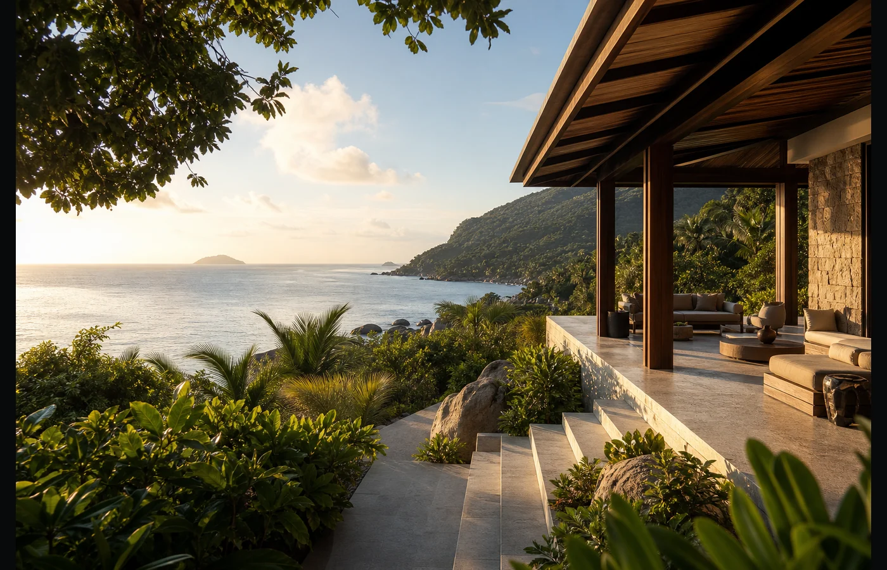

Seychelles is moving from simple visitor growth toward a more selective model: higher-value, lower-impact tourism supported by better standards, stronger environmental expectations and carefully managed land use. For buyers of scarce freehold villas, this shift matters because it makes quality location, privacy and long-term resilience more important than scale.
The official tourism agenda already points in this direction. The Seychelles Department of Tourism describes its role as developing and implementing policy for the tourism sector, while official Tourism Seychelles channels now place visible emphasis on sustainability, product standards and destination quality. Programmes such as Sustainable Seychelles and tourism classification are part of that wider move from quantity alone toward quality, accountability and long-term destination value.
Why this matters for real estate
Premium tourism changes the real-estate equation. When a destination focuses on high-spending visitors rather than mass expansion, the assets that benefit most are not generic rooms or dense developments. They are private, well-located, low-density residences that match the expectations of sophisticated travellers and long-stay owners.
Baie Lazare sits inside that premium story
Baie Lazare on Mahé is already one of the island's most recognisable luxury addresses, positioned near Four Seasons and Kempinski. A private villa here is not just a holiday home; it sits within a coastal district where international hospitality, natural landscape and limited land supply meet.

Why freehold villas become rarer
In many island markets, international buyers can access long lease structures but not full land ownership. Seychelles is different: selected projects can offer freehold title, subject to applicable approvals and transaction procedures. In a market that is deliberately protecting its tourism product and its land, quality freehold property becomes a long-term asset class rather than a simple lifestyle purchase.
Empathia Village follows this logic. The estate is limited to 35 private plots, positioned on the hillside above Baie Lazare, with staged payments in USD, EUR or GBP and villa delivery by a Class I licensed developer. No rental return is guaranteed, and all pricing, availability and purchase terms are confirmed individually; the core value proposition is scarcity, title, location and build quality.
What international buyers should watch
The next phase of Seychelles tourism will likely reward projects that are aligned with sustainability, privacy and high service standards. For investors, agents and private buyers, that means looking beyond headline prices and asking better questions: Is the land freehold? Is the location genuinely limited? Is the developer licensed? Is the product compatible with the direction of the destination?
Sources
- Seychelles Department of Tourism — official tourism policy, sustainability and classification information.
- Financial Times — coverage of Seychelles' sustainable, low-volume, high-spend tourism strategy.